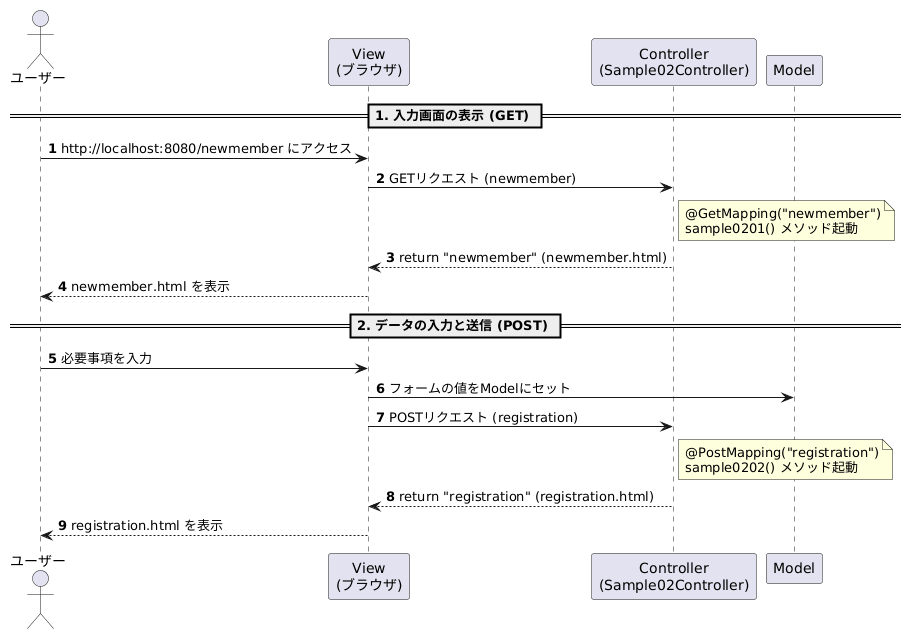

カード 1 / 2
第5章
View-Model-Controllerの連携とModelの使い方
【ニャジラの提案 その６】Spring MVCのModelはデータを運ぶ箱
Spring MVCの Model の使い方の動画です。
第5章 Spring MVCの Model の使い方
1, 今回の学習内容
今回は、SpringMVCのModelの基本的な使い方を見てみましょう。
それまでは、HashMapやら、ArrayListでデータの受け渡しをやったり、メソッドの引数でやったりとけっこうめんどかったのですよ。
それもあって、JSPを使って作るのが個人的には好きでした。
だって、PHPや、VBScriptを使って作るのと同じ要領ですからね。
書籍注文システム 「E-Hon」を作りながら邪悪な Spring Boot の研究をしていきましょう。
今回は、View-Model-Controllerが主題ですので、DBもファイルも使わないシステムです。
Modelの役割は、ViewとControllerの間のデータの受け渡しが主な仕事になります。
いやね、初めてこのModelの考え方を見た時、「こんな方法があったのか！」と驚きましたよ。それまでは、HashMapやら、ArrayListでデータの受け渡しをやったり、メソッドの引数でやったりとけっこうめんどかったのですよ。
それもあって、JSPを使って作るのが個人的には好きでした。
だって、PHPや、VBScriptを使って作るのと同じ要領ですからね。
書籍注文システム 「E-Hon」を作りながら邪悪な Spring Boot の研究をしていきましょう。
今回は、View-Model-Controllerが主題ですので、DBもファイルも使わないシステムです。
次に、今回作成するシナリオを表示します。
第5章 Spring MVCの Model の使い方
2, シナリオ
- ブラウザから、http://localhost:8080/newmenberを送信
- Sample02Controllerは、それを受け、入力フォームnewmember.htmlをクライアントに送信。
- 入力フォームに入力後、サーバーに送信。
- Sample02Controllerは、それを受け、入力結果フォームnewMemberResult.htmlをクライアントに送信。
このシナリオを元にプログラムを作成するのですが、まず、プログラムの流れがどうなっているのか捉える為、シーケンス図を見てみましょう。
その前に、ご自身で考えてみてください。
その前に、ご自身で考えてみてください。
第5章 Spring MVCの Model の使い方
3,シーケンス図

シーケンス図の例です。
以前も申し上げましたが、きれいに書くことが目的ではありません。
シミュレーションする事、解析が目的であることを忘れないでくださいね。
以前も申し上げましたが、きれいに書くことが目的ではありません。
シミュレーションする事、解析が目的であることを忘れないでくださいね。